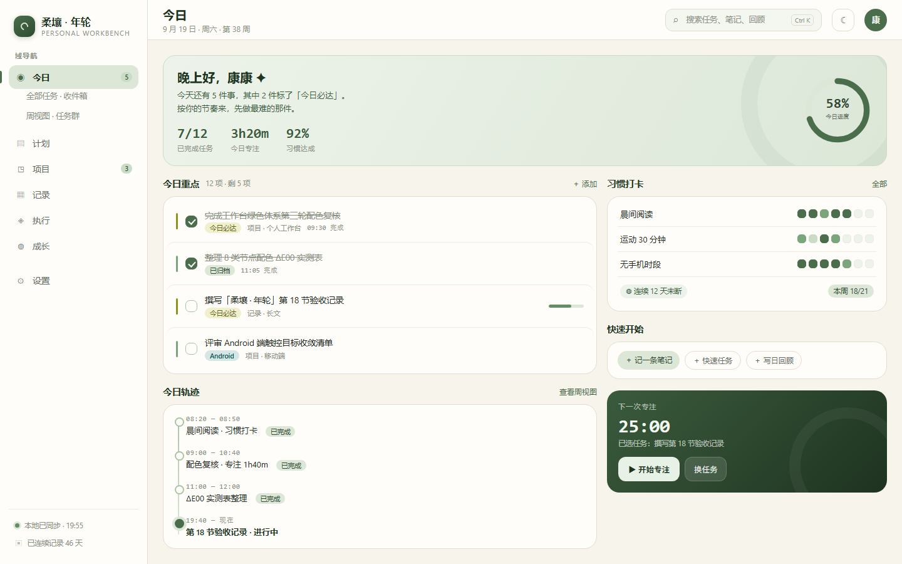
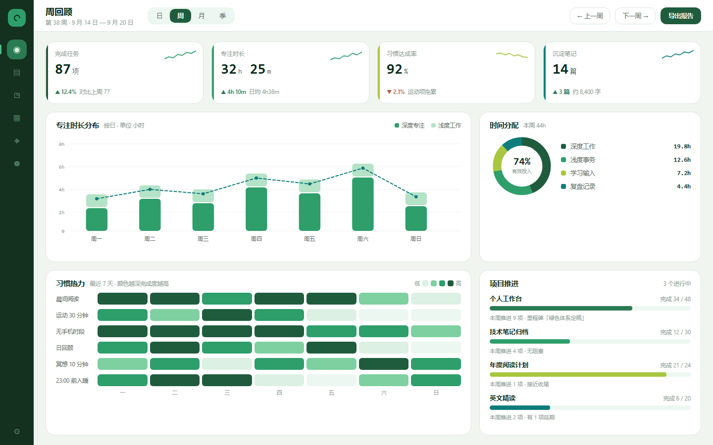
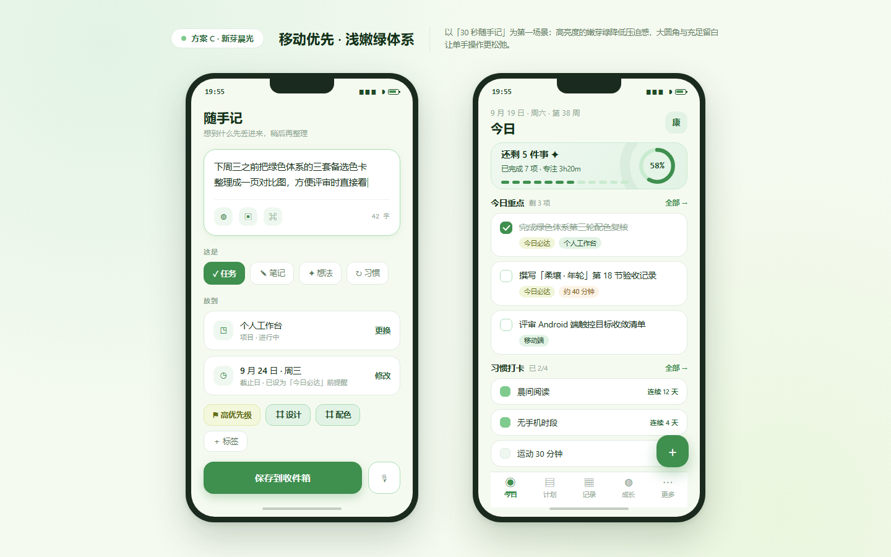
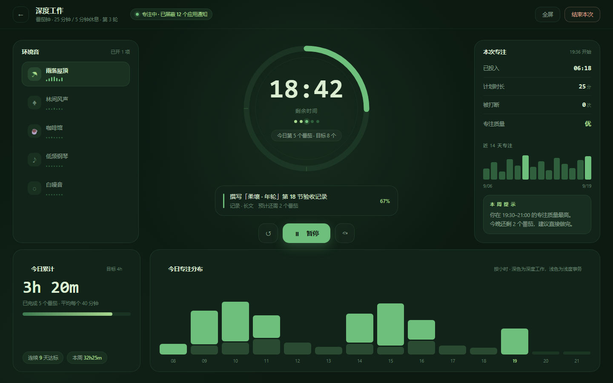

| 方案 | 画布 / 底色 | 主色（行动） | 容器色 | 体系特征 |
|---|---|---|---|---|
| A 苔绿静水 | #F7F4EC | #4A6E4C | #DCE7D8 | 暖米画布 + 低饱和苔绿，中性、耐看 |
| B 深林数据 | #F1F5F0 | #1F5C3D | #DCF0E3 | 冷调浅绿灰 + 深森林绿，明度跨度大，适数据 |
| C 新芽晨光 | #F5FAF0 | #3F8F4F | #E2F3E5 | 高亮度嫩绿 + 黄绿点缀，轻快、亲和 |
| D 松针夜航 | #0C1A12 | #6FBF7C | #122419 | 深色松针底 + 亮绿焦点，沉浸、低干扰 |